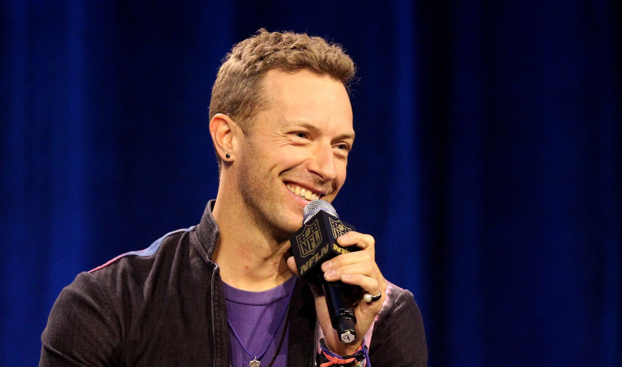
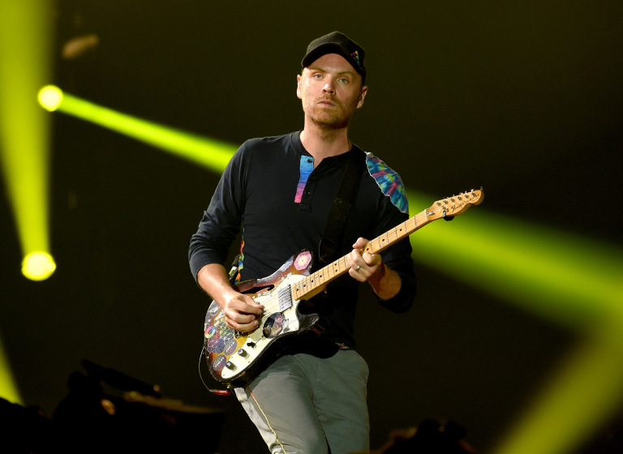
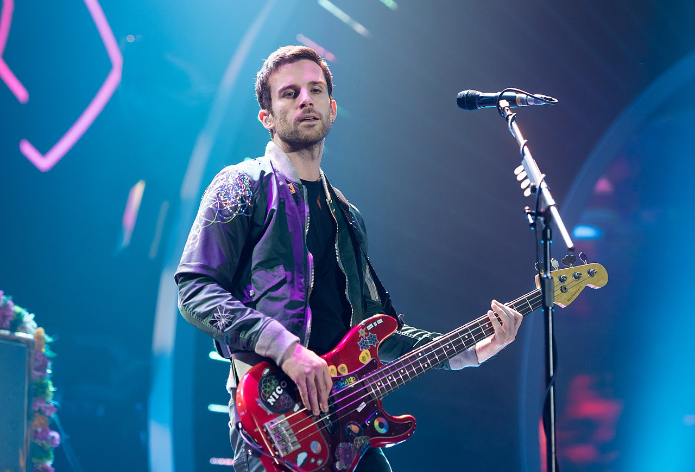

Coldplay are a British rock band formed in London in 1996. Vocalist, rhythm guitarist and pianist Chris Martin, lead guitarist Jonny Buckland, bassist Guy Berryman, and drummer Will Champion met at University College London and began playing music together from 1996 to 1998, first calling themselves Pectoralz and then Starfish before finally changing their name to Coldplay. Their creative director and former manager Phil Harvey is considered the fifth member of the band.
Coldplay have sold more than 100 million records worldwide, making them one of the world's best-selling music artists. They have won numerous awards throughout their career, including nine Brit Awards, seven MTV Video Music Awards, eight MTV Europe Music Awards and seven Grammy Awards from 35 nominations. The band's first three albums — Parachutes (2000), A Rush of Blood to the Head (2002), and X&Y (2005) — are among the best-selling albums in UK chart history. In December 2009, Rolling Stone readers voted the group the fourth-best artist of the 2000s, and Q magazine included the group in their Artists of the Century list.
Christopher Anthony John Martin (born 2 March 1977) is an English singer, songwriter, multi-instrumentalist, record producer, and philanthropist. He is the lead singer, primary songwriter, and co-founder of the alternative rock band Coldplay. Born in Exeter, Devon, Martin went to University College London, where he formed a rock band with Jonny Buckland, Guy Berryman, and Will Champion in 1996 called Starfish, which was eventually renamed Coldplay in 1998.
Buckland was born on 11 September 1977 in Islington, London. He lived there until the age of four, when his family moved to Pantymwyn, near Mold, Flintshire, Wales. When he was eleven years old, he was in the Scouts. In 2008, he told that around the said time he once played in a field with some friends and on that night they had an encounter with an angry sheep, he hasn't worn wool or eaten lamb since then. Buckland also said that he "still likes the uniform", referring to his preference for short-sleeved shirts. He was a student at Ysgol y Waun and Alun School, with the latter being located in the Welsh town of Mold. In 2019, he mentioned having a holiday job at north Wales' Daily Post newspaper.
Guy Rupert Berryman (born 12 April 1978) is a Scottish musician, record producer, and the bassist for the bands Coldplay and Apparatjik. He is also the creative director of The Road Rat magazine and owner of menswear brand Applied Art Forms. Despite being left-handed, Berryman plays the bass right-handed.
